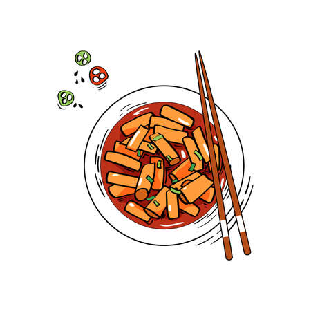
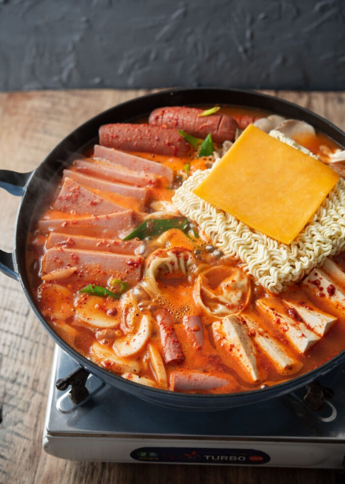

Budae Jjigae Army Stew
More recipes!

Source: My Korean Kitchen
Learn how to make popular Korean hot pot dish -Budae Jjigae (Army stew or Army base stew)!
It is loaded with Kimchi, spam, sausages,ramen noodles and much more!
Some Facts About Army Stew (Budae Jjigae)
- Army stew or army base stew (budae Jjigae is Korean fusion stew
that incorportates American style processed food such as spam,
sausages, canned baked beans and sliced cheese.
- Budae is a general term for a military base in Korean and Jjigae is a term for
soup/stew. Hence the word army stew or army base stew was born.
- Soon after the Korean war (in the early 1950's), food was extremely
scarce in Korea, so those surplus processed foods from the US military bases were a great
supplement for Koreans.
Ingredients for Budae Jjigae (Serves 4)
- 4 cups (1 litre) chicken stock
- 200g (7 ounces) SPAM, thinly sliced
- 4 cocktails Frankfurt sausages (150g, 5.3 ounces),
thinly & diagonally sliced
- 250g (9 ounces) tofu, sliced (about 1.5cm, 1/2 inch thickness)
- 200g (7 ounces) enoki mushrooms, base stem removed & stems seperated
- 1/2 cup aged kimchi, cut into bite sized pieces
- 110g (3.9 ounces) instant ramen noodles
- 50g (1.8 ounces) Korean rice cakes for soup, soaked in cold water for 15 mins if
it was frozen
- 30g (1 ounces) green onion, thinly & diagonally sliced
- 1 or 2 slices of cheese
Sauce (Mix these in a small bowl)
- 2 Tbsp Korean chili flakes (Gochugaru)
- 2 Tbsp rice wine (mirin)
- 1 Tbsp soy sauce
- 1 Tbsp minced garlic
- 1/2 Tbsp sugar
- 1/2 Tbsp Korean chili paste (Gochujang)
- A few sprinkles of ground black pepper
How to make Budae Jjigae
- Assemble the main ingredients (except for instant ramen noodles, rice cakes, green
onion and cheese) in a shallow pot. Add the sauce in the middle. Pour the stock in the corner of the pot.
Close the lid and boil it on medium high heat until the stock starts to boil. (about 8 mins).
Add the reminaing ingredients - instant ramen noodles, rice cakes, green onion and cheese on top
of the pot and boil uncovered until the noodles are cooked (about 2 to 3 mins). Reduce the
heat to low (if you're cooking on a portable burner and sharing the food at the dining table).
Start dishing out soup, protein and vegetables onto your own soup bowl. Serve with steamed rice (& with other
Korean side dishes).